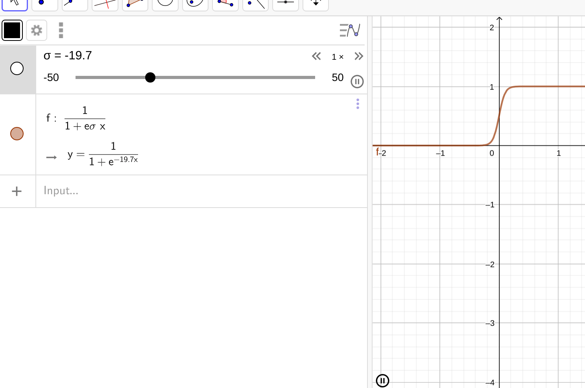

Spectral Analysis of Real Weighted Graphs
Table of Contents
- 1. Tasks
- 1.1. Derive and explain the equation on page 3
- 1.2. Watch and summarise the Neural Networks Video
- 1.3. Create a Neural Network to Classify binary data
- 1.4. Set up a Wiki and put the working in there
- 1.5. Set up the wiki and comment on Mattermost
- 1.6. Add to the CDRMS Repo
- 1.7. Set up Kanboard Page
- 1.8. Derive the sigmoid function for logistic regression
- 1.9. Clarify the Question
- 2. Ranknet
- 3. Summary
- 4. Research
- 5. Ring Theory ATTACH
| Headline | Time | ||
|---|---|---|---|
| Total time | 8:31 | ||
| Tasks | 8:31 | ||
| Derive the Sigmoid Curve | 4:00 | ||
| Derive and explain the equation on… | 4:31 |
Project Topic Spectral Analysis of Real Weighted Graphs Adviser Assoc. Prof. Laurence Park
zotero & disown kitty -e 'cd /home/ryan/Sync/Studies/2020ResearchTraining/spectral_analysis_graphs/' & disown mattermost & disown
1 Tasks
1.0.1 Derive the Sigmoid Curve
Just make sure that you understand logistic regression so there is a ground-truth classification method.
1.1 Derive and explain the equation on page 3
RankNet is concerned with ranking things, the most obvious application of this is information retrieval, for example if a search returns a variety of results that are very similar to the query they will need to be ordered in some way to make them more useful. This is traditionally done with PageRank or by simply using TF-IDF weighting, it is not immediately clear what advantages this approach has, presumably it ranks results better.
The output of Ranknet is concerned with a probability of one object being ranked higher than another and implements a Neural Network in order to model this. It is not clear why RankNet is used for this rather than traditional classification techniques.
Take two objects \(U_{i}, U_{j}\) (e.g. an article, document or anything else) that are described by a feature vector \(\mathbf{X}_{i}\) and \(\mathbf{X}_{j}\). RankNet maps this feature vector to some number:
\[ f: \mathbb{R}^{n} \rightarrow \mathbb{R}: \mathbf{X} \mapsto s \]
If \(U_{i}\) is ranked higher than \(U_{j}\) this is denoted by:
\[ U_{i} \triangleright U_{j} \]
The two outputs (\(s_{i}, s_{j}\)) are mapped to a probability that \(U_{i}\) is ranked higher than \(U_{j}\) via a sigmoid function:
\[ p_{ij} \equiv P\left(U_{i} \triangleright U_{j} \right) \equiv \frac{1}{1 + e^{-\sigma \left(s_{i}-s_{j}\right)}} \]
The model is dependent on the \(\sigma\) value as shown in figure 1.

Figure 1: Animation of the Sigmoid function for various \(\sigma\) values.
In order to fit this curve a penalty term needs to be introduced to measure how well the curve fits the data. In regression analysis \(\mathrm{RMSE}=\sum_{i=1}^n \left[ \left(x_i - \hat{x}\right)^2 \right] \) is often used as loss function and could be implemented here.
Assume this is a binary classification problem (i.e. one is ranked higher) and let \(p\) describe the probability of an object belonging to class 1. If an observation belongs to class 1 we can measure the badness of fit by \(1 - p\), conversely if an object truly belongs to class 0 we can measure the badness of fit by \(p\), this is illustrated in figure 2.
| Actual Class | Residual | Cost |
| \(p=0\) | \(p\) | \(\ln{\frac{1}{1-p}}\) |
| \(p=1\) | \(1-p\) | \(\ln{\frac{1}{p}}\) |
| Either | \(p^{\left( 1- \overline{p} \right)\cdot \left( 1- p \right)^{p}}\) | \(\ln{\left( p^{- p}\cdot \left( 1- p \right)^{- \left( \overline{p} - 1 \right)} \right)}\) |
Figure 2: Residual from Classified points
These residuals (\(R\)) could be combined to account for either situation:
\begin{align} R= p^{1- \overline{p}}\cdot \left( 1- p \right)^{\overline{p}} \end{align}A log transform would give a more convenient function (i.e. no exponents), because the transform is monotone this will still work as a cost function and so this could be implemented:
\begin{align} R^{*} = \left( 1- \overline{p} \right)\cdot \ln\left( p \right) + \overline{p} \cdot \ln\left( 1- p \right) \end{align}This however is not implemented in ranknet (Burges, n.d.), instead the cost function (\(C\)) satisfies the following property (see table 2):
\begin{align} \frac{1}{e^{C}} &= P_{ij}^{ \overline{P}_{ij}} \cdot \left( 1- P_{ij} \right)^{\left( 1-\overline{P}_{ij} \right)} \\ \iff C &= - \overline{P}_{ij} \ln\left( P_{ij} \right) - \left( 1 - \overline{P}_{ij} \right)\ln\left( 1- P_{ij} \right) \end{align}Let the actual status of the ranking be defined by \(S_{i,j}\in \left\{-1, 0, 1\right\}\) like so:
| \(S_{ij}\) | Status | Probability |
| 1 | \(U_{i} \triangleright U_{j}\) | \(\overline{p}_{ij}=1\) |
| 0 | \(U_{i} \enspace \square \enspace U_{j}\) | \(\overline{p}_{ij}=0.5\) |
| -1 | \(U_{i} \triangleleft U_{j}\) | \(\overline{p}_{ij}=0\) |
This provides that:
\begin{align} \overline{P}_{ij}= \frac{1}{2}\left( 1 + S_{ij} \right) \end{align}
c=1; p = 0.7; L(x) = 1-p
c=0; p = 0.7; L(x) = p
p^c * (1-p)^(1-c)
\[ p^{c}\left( 1- p \right)^{\left( 1- c \right)} \]
It is however more convenient to log transform this, a log transform is monotone and so we can still use it as a loss function. so we are dealing with sums and products rather than exponentials:
\[ \log \left( p^{c}\left( 1- p \right)^{\left( 1- c \right)} \right) = \ldots \]
The equation on page 3 we get by plugging in the the preceeding two equations (value of p and value of \(\overline{p}\))
1.2 Watch and summarise the Neural Networks Video
Create a Citation for this: RankNet/RankNet_To_LambdaRank.pdf
1.3 Create a Neural Network to Classify binary data
- Get the Data from UCI
- Use three softwares to get an idea for it:
- RTorch
- pytorch
- JuliaTorch?
Compare the usability and performance of the different OS.
1.4 Set up a Wiki and put the working in there
And/or put the working into MkDocs Pages.
1.5 Set up the wiki and comment on Mattermost
1.6 Add to the CDRMS Repo
1.7 Set up Kanboard Page
Share that page with Laurence.
This means that Ui is ranked higher than Uj
1.8 Derive the sigmoid function for logistic regression
1.9 Clarify the Question
Is there any benefit to using Ranknet rather than simply using Classification?
2 Ranknet
The Ranknet uses a Sigmoid Curve curve: \[ U_{i} \triangleright U_{j} \]
3 Summary
3.1 What is spectral Graph Theory
Spectral graph theory starts by associating matrices to graphs, mostly the:
- Adjacency Matrix
- Laplacian Matrix
3.2 What do we mean by real weighted graphs
Like non-integer values.
3.3 What do I want to look at researching
3.4 What is the Research Outline
3.4.1 This is what I put together in Planner
4 Research
4.1 Research Papers
- Tu, E., Zhang, Y., Zhu, L., Yang, J., & Kasabov, N., A Graph-Based Semi-Supervised k Nearest-Neighbor Method for Nonlinear Manifold Distributed Data Classification (). (NO_ITEM_DATA:tuGraphBasedSemiSupervisedNearestNeighbor2016a)
- Chang, S. Y., Pierson, E., Koh, P. W., Gerardin, J., Redbird, B., Grusky, D., & Leskovec, J., Mobility network modeling explains higher SARS-CoV-2 infection rates among disadvantaged groups and informs reopening strategies (). (NO_ITEM_DATA:changMobilityNetworkModeling2020)
4.2 Books
- Bondy, J. A., & Murty, U. S. R., Graph theory with applications (), : North Holland. (Bondy and Murty, n.d.)
- Nicodemi, O., Sutherland, M. A., & Towsley, G. W., An introduction to abstract algebra with notes to the future teacher (), : Pearson Prentice Hall. (Nicodemi, Sutherland, and Towsley, n.d.)
5 Ring Theory ATTACH
A rign is a set that has two operations (see (\S\S Nicodemi, Sutherland, and Towsley, n.d., 2.4–2.6)):
- Addition \((+)\)
- Multiplication \(\cdot\)
And Satisfies the axioms of a ring:
Associativity of Addition
\(\left( \forall a,b,c \in \mathcal{R} \right) \left( a+ b \right) + c = a + \left( b + c \right)\)
Commutativity of Addition
\(\left( \forall a,b \in \mathcal{R} \right) a + b = b + a\)
Additive Elements Exist
\(\left( \forall a \in \mathcal{R} \right) \wedge \left( \exists_0 \in \mathcal{R} \right) a + 0= 0 + a = a\)
Additive Inverse Exists
\(\left( \forall a \in \mathcal{R} \right)\wedge \left( \exists b \in \mathcal{R} \right) a + b = b + a = 0\)
- This can be equivalently expressed:
\(\left( \forall a \in \mathcal{R} \right)\wedge \left( \exists \left( - a\right)\in \mathcal{R} \right) a + \left( - a \right) = \left( - a \right) + a = 0\)
Associativity of Multiplication
\(\left( \forall a,b,c, \in \mathcal{R} \right)\left( a \cdot b \right)\cdot c = a \cdot \left( b \cdot c \right)\)
- Distributivity of Multiplication over Addition
- \(\left( \forall a,b,c, \in \mathcal{R} \right) \left( a\cdot \left( b+ c \right)= \left( a \cdot b \right) + \left( a \cdot c \right) \right)\), AND
- \(\left( \forall a,b,c, \in \mathcal{R} \right)\left( a + b \right)\cdot c = \left( a \cdot c \right)+ \left( b \cdot c \right)\)
5.0.1 Further Axioms
Other conditions to have special classes of rings exist:
- Commutativity of Multiplication
A ring that satisfies this property is called a commutative ring
\(\left( \forall a,b \in \mathcal{R} \right) a \cdot b = b \cdot a\)
Existence of a Multiplicative Identity Element (A ring with Unity)
- A ring that satisfies this property is called a ring with identity or
equivalently a ring with unity (the multiplicative identity, often denoted by \(1\), is called the unity of the ring.
\(\left( \exists 1 \in \mathcal{R} \right) \left( \forall a \in \mathcal{R} \right) 1 \cdot a = a \cdot 1 = a\)
5.1 Integral Domain
An integral domain is a ring that:
- is commutative
- With identity/unity
- Has no Zero Divisors
In an integral domain we can cancel values:
\[ \left( c \neq 0 \right) \wedge \left( ac = bc \right) \implies a = b \]
5.2 Fields
A field is:
- An Integral Domain
- In which every non-zero element is a unit
A unit in a ring is an element of a ring that always has a multiplicative identity.